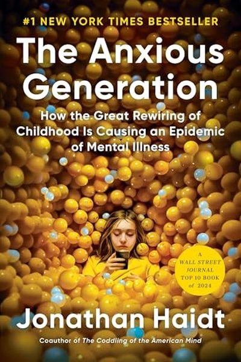

Library › Self-Improvement
The Anxious Generation — Summary & Key Lessons

The 2024 blockbuster: how the smartphone rewired childhood and caused the teen mental-health collapse — and the 4 rules to fix it.
📖 OPEN THE FULL INTERACTIVE BREAKDOWN →🌐 Read it in Hindi, Hinglish, Gujarati, Tamil & 22 more languages — free, with audio.
💡 The Big Idea
Haidt's data-backed bombshell: around 2010-2015, teen anxiety, depression and self-harm spiked across the English-speaking world — exactly when smartphones and social media saturated childhood. The mechanism: the 'play-based childhood' (free, unsupervised, risk-filled, real-world) was replaced by a 'phone-based childhood' (supervised, algorithmic, comparison-filled, virtual). His fixes: no smartphones before high school, no social media before 16, phone-free schools, and far more unsupervised play.
🧠 The 5 Key Lessons
Lesson 1: The Great Rewiring: What Changed in 2010
The Surge
Between 2010 and 2015, teen depression and anxiety roughly doubled in the US, UK, Canada and Australia — simultaneously, across genders and regions. The only variable that changed globally at the same moment: smartphones and social media went from 'some teens have them' to 'all teens have them'.
📖 Example: Haidt charts the data: daily social-media use among teens went from under 50% to over 80% in that window, while unsupervised playtime collapsed. The curves line up almost perfectly with the mental-health collapse. Read the full example →
⚡ Do this: If you're a parent or guardian: audit the actual hours your teen spends on screens vs. with friends in person. The gap IS the risk factor.
Lesson 2: Play-Based vs Phone-Based Childhood
The Two Childhoods
Play-based childhood: unsupervised, risky, physical, social — where kids learn conflict resolution, risk assessment and resilience. Phone-based childhood: supervised, sedentary, algorithmic — where kids learn comparison, FOMO and performance anxiety. The first builds the 'antifragile' psyche; the second starves it.
📖 Example: Haidt compares generations: kids who roamed neighborhoods, climbed trees and resolved their own playground fights grew up with calibrated risk-senses. Kids whose 'social life' is curated feeds grow up anxious about every like and alert. Read the full example →
⚡ Do this: Give a child (or yourself) one hour of genuinely unsupervised, physical, outdoors time this week — no screens, no adults hovering.
Lesson 3: The Four Harms of the Phone-Based Childhood
What Social Media Does
Haidt names the four damage channels: 1) Social deprivation (less face-to-face time), 2) Sleep deprivation (screens at night), 3) Attention fragmentation (constant switching), 4) Addiction (variable-reward dopamine loops). Any one would hurt; all four together are a psychiatric storm.
📖 Example: The data: teens who spend 3+ hours/day on social media have double the risk of depression; those with phones in bedrooms sleep an hour less. The four harms compound — less sleep makes attention worse, worse attention increases escapism. Read the full example →
⚡ Do this: Pick ONE of the four harms and fix it this week: phone out of the bedroom at night, or a daily 2-hour phone-free block.
Lesson 4: The Four New Norms
The Fix
Haidt's practical prescription: 1) No smartphones before high school (give basic phones instead), 2) No social media before 16, 3) Phone-free schools, 4) Far more unsupervised play and independence. Norms beat lectures — parents can't fight alone, but villages can.
📖 Example: Schools that banned phones saw measurably better focus and social interaction within weeks; communities that delayed smartphones reported calmer childhoods. The resistance is collective action, not individual willpower. Read the full example →
⚡ Do this: If you influence any young person's life: implement one of the four norms this month — and talk to 2 other families to do it together.
Lesson 5: It's Not Just Kids — Reclaim Your Own Attention
Adults Too
The same forces shaped by the phone apply to adults: attention fragmentation, comparison anxiety and sleep loss. The phone-based life is a design problem, not a personal failing. Adults who model phone-free presence give children (and themselves) the biggest gift.
📖 Example: Haidt himself describes adopting phone-free Friday dinners and keeping his phone out of the bedroom — small structural choices that restored family attention. Read the full example →
⚡ Do this: Model it: one phone-free ritual daily (meals, mornings, walks). Your attention is the most valuable thing you give anyone.
✅ 5-Step Action Plan
- Audit real screen time vs real-world time this week.
- Fix one of the four harms: bedroom phone, sleep, focus, addiction.
- Give a child one hour of unsupervised outdoor play.
- Implement one of the four norms in your family/classroom.
- Start one phone-free ritual for yourself daily.
💬 Best Quotes from The Anxious Generation
- “The phone-based childhood is the greatest experiment in human history — and we are the guinea pigs.”
- “A play-based childhood is the training ground for an anxious-free adulthood.”
- “What children need most is what we've removed: freedom, risk, and unsupervised time with other children.”
Interactive version: mark lessons as read, listen in your language, share quote cards.